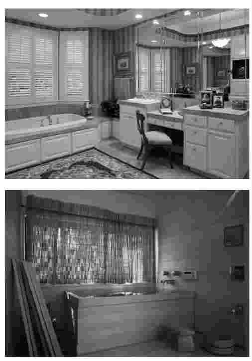
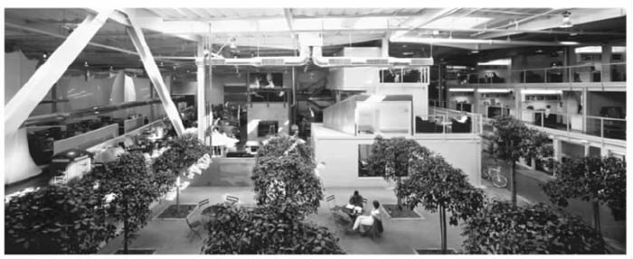
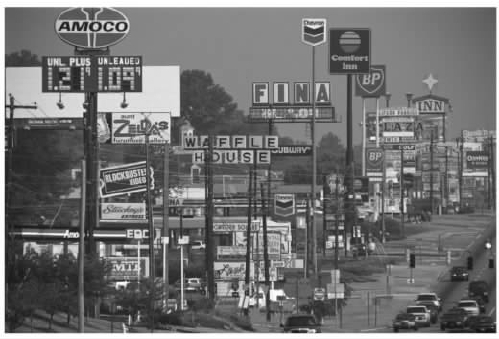
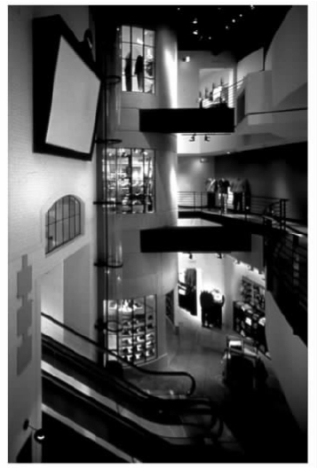

当我们开始考虑环境因素时，关于设计的讨论会变得更复杂。环境与物品、传达一样，都由形式、颜色、图案和肌理这些基本元素构成，但是空间和光线的表现是环境设计专有的特点。而且，在这个环境背景下，物品和传达与空间元素相互勾连，各自的功能和意义都得到了加强。
环境另一个重要的特征是，它为活动提供了框架。它深刻地影响了使用模式和行为模式，改变了家庭生活、工作、休闲和一系列商业投资的前景。
用基本的分析术语来讲，内环境和外环境之间有着明显的界限。我们通常认为后者在其他学科领域内起着支配性作用，例如建筑业、城市和区域规划，以及园艺。此外，构成室内框架的结构通常也是由建筑师、工程师和施工人员决定的。然而，还是有一部分的环境设计主要服务于特殊的用途，它们虽然仍包含在设计范围内，但在很大程度上与其他形式的设计实践并不一样。然而，这类设计的功能和观念涉及的范围异常广泛，要把它们放入一个狭小的范围内讨论难免是在隔靴搔痒。
正如其他的专业化领域一样，室内设计在方法和专业职能上跨度很广。其中一类设计师关注特定空间内部的装饰性设计和内部摆设，他们利用现有的家具和材料，以期获得整体上的审美效果。这些设计师多为富人设计豪宅，或为酒店、宾馆等场所服务。这些设计多是受到了流行趋势、设计师和客户个人品味的影响。可以说，这些设计多是将现存的元素合成，而不是基于基本原理进行的创作。然而，在室内设计发展的另一端，我们可以找到原创的空间概念、规划，以及有特殊用途的特殊设备。比如，办公室、医院或者学校必须严格符合一系列关于健康、安全和高效的标准。
然而，与设计的其他方面相比较，除了这些专业因素外，环境设计还有一个独一无二的特点。在一定程度上，环境设计是唯一一个可以让大量的人参与决策的实践领域，比如家居设计。大部分人并不参与身边的产品或者传达的设计，但是家庭环境是我们实践设计的主要空间，在这里人们可以按照自己的意愿进行设计。在第三章结束时，我们提到了奇克森特米哈伊和罗奇伯——霍尔顿所做的调查，结果显示人们通常将个人意义附加在物品上。利用环境设计，我们不仅可以从现有的形式中创造出个人意义，还可以通过积极的改造，将现有的环境变得更加合人心意。越来越多的产品、宣传和电视节目开始趋向于让用户自己设计，这些正是这种潮流的重要表现，也为那些希望通过改变个人环境来反映个人的需要和渴望的人们提供了手段和信息。但这有时也会造成混乱的结果。过度装饰会造成滑稽甚至怪诞的效果，比如，布满郊区起居室天花板的塑胶仿木横梁，在后院里销售的、买来后镶在卧室人造板家具塑料外壳上的金色的洛可可式装饰品。然而，这种潮流中有一个经常被忽略了的重要原则。有关这类设计的书籍、工具和材料鼓励人们在事关个人环境改造时自己做出重要决策，在一定程度上，创造性地实现自己的理想。进行这些活动所要求的观念和技术并非特别难，是大部分人力所能及的，尽管这些行为的结果很容易成为那些自诩为鉴赏专家的人的笑柄。与之前由专家决断的时代相反，这些行为有力地证明了设计是具有实现功能的，它激发了大众的参与。
有趣的是，在美国情况却有些不同。美国室内设计师学会在2001年就拥有三万名员工，其中有相当一部分人专门负责住宅设计，他们与设计所需产品和服务的制造商（如纺织品、墙纸、室内陈设品和家具的制造商）有密切往来。此外，美国大部分大型家具公司和百货公司都雇有专业设计师，他们在客户购物时负责提供专业参考意见。仅芝加哥一个家具零售商店就宣称有两百位设计师为客户服务。因此需要专业住宅设计的人口比例在美国也比在欧洲要高出许多。例如，与美国相比，荷兰设计师协会在“环境设计”部拥有一百八十名设计师。按人口比例计算，在荷兰这个国民富裕、居民设计意识强的国家，每八万九千人中才配有一名室内设计师，而在美国，每八千七百人就会配有一位室内设计师。据一项评估显示，在美国，三分之一的私房屋主在装饰自己的房屋时都选择咨询专家建议。造成这个情况的原因有很多，其中可能包括大众文化对人们产生的影响。由于人们一味追求舒适而非动手操作，动手能力减弱，这样就进一步加深了商业化的服务对文化的渗透。再加上现今已婚夫妇为确保家庭收入水平双双延长工作时间，仅余下极少的时间来布置家庭。
每个社会在处理家居环境时都有一系列独特的方式，因此，要从中归纳出固定的范式很困难。更明显的是，在不同的文化和地域环境下，这些方式会存在很大的差异。其中包括房屋是属于私房还是租赁房，占主导地位的房屋供给形式是公寓住宅还是独幢房屋，以及可供使用或合理的家居空间等要素。
另外，不同于其他国家，第二次世界大战结束后，美国家庭的大小增加了一倍。在很大程度上，这反映了家居必备和必需的财产及设备的扩展。就全球比较而言，美国家庭可以利用的空间如此之多，几乎不需要仔细考虑功能性设备的一些细节问题。美国生产的家庭用具，如洗衣机、电冰箱、炊具和洗浴设施，在形式和技术上通常体型庞大而且式样过时。与专为欧洲或亚洲市场设计的产品比较，它们的价钱便宜。在一般的美国人家里，人们大多专注于空间形式，而在如何利用形式满足需要方面鲜少做实质性的考虑。我们常常可以看到若干个浴室。独立式洗衣间也是标准设计之一。如果某个设备功能不够成熟，普遍会有一个购买及支付的补偿系数。
与美国人的住宅相比，一般的日本家庭面积非常小。随着所需的功能日渐增长，在这样一个有限的空间内，日本人必须考虑家居的每个细节。因此，市场上体现个人元素的设计和家居内在环境的设计都必须要适应不同的需求。比如，在日本，浴盆通常比较小，仅够坐着或蜷缩着淋浴，而无法舒适地躺着。当然，公共澡堂倒是常常能提供很大的空间。厕所和坐浴设备通常合并在一起，并且由电子操控。同样地，他们没有体积庞大的洗衣机和烘干机，而是将两种功能综合在一个小型设备里。冰箱很小巧，但是技术很先进。炊具被细分成很多小的单位，以便存放于厨房墙上的储藏空间内。后一点也说明，这种空间限制迫使很多日本家庭向垂直方向发展而不是向水平方向延伸，也就是说，用品必须往上堆而不是横向摆放。此外，日本房屋中的许多功能在筹划时必须留有改动的余地，而不能固定为专属的空间和专用设备，比如，起居室可以当成卧室，过后又能够再恢复成起居室。

图18 是躺着还是坐着：美式浴室和日式浴室。
然而，在总体文化差异的框架内，在大部分国家里，住宅仍然是每个人根据自己的生活方式和品味布置环境的一个地方，除此之外别无他处。当然，那些“时尚”类的杂志、由制造商打出的广告，以及零售商的宣传目录上宣称的时尚会给人们造成无数困扰，但将某处空间私人化，并赋予它一定意义，仍然是个人得以满足其设计决定权的主要途径。
与之相反，绝大多数的工作场所都是由经理和设计师决定该如何安排的，在这个环境下工作的个人只能接受这个安排带来的结果，不太可能对其进行修正。随着二十世纪的发展，人们对工作和管理有了新的认知，关于工厂和办公室合理规划的观点也随之发生了改变。随着世纪初大型企业的增多，弗雷德里克·W.泰勒及其继任者在“科学管理”运动中提出的观念占据了主导地位。泰勒和他的追随者提出，通过推行标准程序来对工作过程进行管理控制。他提倡找出所有工作中“唯一的也是最好的办法”，为了配合这样的生产模式，应采取工业操作效率研究分析的手段来组织工人。在大规模生产的基础上，为了使生产效率最大化，工厂的工人必须服从于详细设计好的生产流程。办公室职员坐在办公桌前，身着不同的制服，同样也按严格的等级制度组成并受其控制。我们会发现，在一些官僚系统内，桌椅摆放的方位和它们的大小随着级别的改变而改变。在工厂和办公室，工作程序的重点是通过高度组织化的运作来解决已知问题和完成各道工序。
从二十世纪六十年代起，一些公司在管理上开始实行宽松的管理机制。总的来说，它强调的是领导而不是控制，它鼓励工人进行团队配合，更积极地为生产过程服务。例如，在一些大型的日本公司，工人在生产过程中所做的贡献使得公司在取得进步的同时减少了大笔的开销。从工厂空间布置的特点上我们就可以看出这样的偏重。例如，在工厂里辟出几块区域设置舒适的椅子，方便工人们定期会谈讨论工作事宜。这种创新帮助很多日本公司在竞争中取得了巨大的成功。办公室里另一个并行的创新就是所谓的“办公室景观设计”。基于类似的观念，这种设计也期望加大员工的参与。它的布局更为灵活，大量地使用隔板将办公室隔成若干个小的单间，既为员工提供了一定的私人空间又确保相互之间能够融洽相处。
随着设计各个领域的发展，观念上发生了一系列的演变，这些观念被接受的过程是曲折的，放眼全球，我们仍然可以找到处于不同阶段的工作组织。即便开发了新的技术，泰勒昔日最糟糕的观念也能被保留下来。在一些文件录入公司，为防止不必要的分心，办公区域内没有窗户，办公桌按照等级排放。这些公司设有摄像头，监控员工的一言一行，甚至电脑的按键次数，以确保工人能保持一定的工作速度。在众多的例子中，技术的影响并未指向任何具体的方向，它们在运用者的价值观的基础上被改造和表现。
然而，人们在许多现代技术发展的潜在机动性中也发现了一些有利的方面，这些有利的方面也得到了有效的应用。与制造企业的发展不同，日本的办公室仍然十分拥挤，不同级别的钢制桌子反映了等级态度，以及城市空间的普遍缺乏。然而，二十世纪八十年代末以后，大批的“智能型”建筑完工，这些建筑的目的在于开发新的电子技术的潜能。例如，丹下健三设计的东京市政厅于1991年完工。大楼最初安装的十二台超级电脑，加上随后又增加的数台超级电脑，配合大量的传感器，可以计算出人们的活动，并依此对光线和温度进行调节。它们也控制了大楼保安、电话线路、防火门以及升降梯。办公室是典型的隔断分区，色调温暖且柔和。一万三千名员工使用智能卡刷卡进入自己的办公室。在这栋综合性建筑物内，这些智能卡也能用来在餐厅消费和在商店购物。在效率操作方面与先前的环境相比，这是一个很大的进步，但这并不表示在办公室工作理念上的任何提高。
但是，日本一些公司已经开始探索智能型建筑理念带来的新的可能性。对工作模式的研究结果表明，一个工作日内，日本员工通常只有40%的时间在使用他们办公室内的办公桌。为了寻求更大的效率，一些公司引进了更有弹性的工作系统。根据员工的工作性质，他们可以在不同的办公桌上办公，以便跟同事交流。只要使用智能卡，他们的个人电话就可以追踪到任何一张办公桌上。
我们要将工作从办公室内转移出来，而所做的这一切不过是走了一小步而已。早在二十世纪九十年代初，一些公司（如资生堂化妆品公司）就将大部分的销售活动移交下来了。员工可以在家中或临近的办公室里办公，而不必每天在高峰时期花上四个小时，费时费力地往返于公司和住地之间。销售员工只需要配备一台手提电脑，通过手机联网，进入公司主机，就能够即时地为客户取得重要信息，比如是否有货、价格高低和货物投递问题等。
虽然这些发展带来了很多便利，但也带来了许多新问题。毫无疑问，将工作向下移交可以节省空间，同时可以省下在市中心昂贵的租赁费，但还是需要有一个主要的办公室让员工可以办公（即便只是偶尔）。对于顾问公司而言，就更是如此了。顾问公司里的许多员工大部分时间都与客户在一起。他们有时一周甚至一个月内只有一天在总公司办公。在美国，一些大型的公司，如德勤会计公司、安永会计公司、安达信咨询公司，已经开始试验一种名为“旅馆式办公”的解决方案。
基本上，这就是一项空间配置计划。员工可以通过电子技术与总公司进行交流，在特定时间内预约空间，甚至可以预定食物和饮料。在办公室内，个人电话号码和网线都接入预定的办公桌。一个名为“门房”的后勤职员负责将个人文档放入一个小推车内，安置在办公桌旁，并将所需的设备、文具和材料都准备好。即便是家庭照片这类物品有时也在工作人员抵达之前就被放置好了。工作人员离开之际，文档会叠放在推车里归还，贮备会得到补充，办公区域会被整理干净，以待下一位使用者。这项设计很明显借用了酒店运行的方式。
由于这种短暂的工作模式要求彻底改变工作行为和态度，许多员工起初并不适应。但只要技术开发达到一定层次，尤其是在软件和辅助活动的帮助下，我们很快就会发现员工能够克服这类方案带来的空间丧失感。
但从TBWA/Chiat/Day广告公司的例子，我们看到了贸然进行这种大规模改变所带来的危害。早在二十世纪九十年代初，TBWA/Chiat/Day广告公司就开始参与旅馆式办公试验，这是当时覆盖范围最广的试验之一，但是这个试验给它带来了种种问题，受到了公众的高度关注。公司在当时设在洛杉矶和纽约的办事机构内大范围地进行了所谓的“虚拟办公室”实验。然而，没多久员工们便起来反抗这种持续的流动模式，认为这种模式造成了不必要的分裂。他们开始要求有自己的工作空间。为了应付不断改变的商务环境中层出不穷的问题，人们似乎需要有一个稳定和安全的避风港。
当然，对于商界变化规则的认知总是滞后于对新型环境模式的探寻。许多管理人员，尤其是那些成功企业的管理人员，都意识到在这个急剧变化的年代，最大的危险就是满足于现状。尤其，随着信息技术的爆炸，可获得的数据量和信息量呈指数增加，很明显，只有在创造性地理解和运用它们的前提下，这些信息才具有价值。随着工业技术上的改变，这种管理思维上的发展趋势被大大地加强了。这些改变包括从大规模生产到利基市场的弹性制造，还包括对服务行业越来越多的关注。结果，为在竞争中求得生存，我们重申创新是必需的，其重中之重依赖于创造力。这便要求员工们能够积极参与工作过程，将他们的知识和经验运用于解决快速改变的环境下出现的种种几乎从未遇到过的问题。结果，制约合作和交流的机构等级制度与环境被新的环境所取代。新环境有一个令人愉悦的组织结构，鼓励相互交流，巧妙地结合了私人空间和公共空间。人们相信在一个通常很随意的日常环境中，通过相互作用和私人交流，能产生各种观点，激发人们的创造力。
如果企业策略强调培养新观点和创造新产品，现在工作环境、设备和器材的设计所面临的挑战就变成了如何对空间进行布局，使它能够激励员工之间的互动，增加活力和创造力。将多种强调创新的观念融合在一起，结果就产生了一个由许多小团体构成的办公室环境，组织内不同元素之间可以进行高水准的潜在互动。
1999年，TBWA/Chiat/Day广告公司在吸取了先前经验教训的基础上，将位于洛杉矶的一个十二万平方英尺的仓库改装成了新的办公地点，由克莱夫·威尔金森负责设计。这反映出了解决方案上一个有趣的转变：从旅馆式办公系统中所体现的临时工作地点理念到能灵活地同时包含不同工作模式的社区理念。通过向每个员工提供单独的工作区，这样便解决了之前虚拟办公室试验中出现的很多问题。但是，员工还是有很大一部分时间以团队形式待在专门处理大客户问题的办公室里。社区概念在一些环境中十分明显，比如在一些工作区附近会有一条商业街横穿整个地区，还有一个中央公园，里面栽种了一些无花果树，供人们休闲。这么做的目的在于提供一个集合个人、团队和社区资源的场所。这个场所建立在高度灵活性的基础上，意在鼓励日常交流和互动，反映了公司考虑问题的方法发生了改变。

图19 类似社区的办公室景观：由克莱夫·威尔金森为洛杉矶的TBWA/Chiat/Day广告公司设计。
与自适应邻域式室内空间概念直接相对的是现代生活发展的另一个特点，即标准环境的指数式增长。美国首创了这一原型形式，后扩展到了其他很多国家。我们可以在高消费市场找到早期的例子。比如，为了使在旅途中的管理人员不论身处何地都能够很快地找到一种连贯性与熟悉感，希尔顿饭店旗下所有的建筑物都是按一个标准模式来建造的。基于这个概念，希尔顿饭店成为了全球知名的连锁饭店。
然而，只有当这个原则扩散到低收入消费者市场以后，它的影响才在最大程度上得到了发挥。曾经有一度，美国无数的小镇和郊区最有特色的景观之一就是道路两旁长达数英里的“商业街”。这些商业街上不过是一些商店、餐馆以及服务行业，这些早先高度集中的行业现在沿着商业街四处分布，看似杂乱，但为机动车辆提供了快捷通道。然而，在这样的混杂中，特殊公司有着高度的识别系统，尤其是快餐专营店。麦当劳、必胜客或汉堡王等专营店的建筑，在全国范围内，事实上，在全世界范围内，都采用类似的模式，顾客能马上识别它们。无论个别场所的具体空间维度是怎样的，它们内部的装修、设备和家具也能为顾客提供即时识别模式。同样，它们的菜单上提供高度标准化的食物和清晰的报价。因此，设计的作用在于提供一个可以覆盖所有活动和设计元素的完整的样式，并且能根据具体地点在细节上灵活变动，但是所有的变动都是在总的标准框架内进行的。

图20 广告牌林立：美国商业街。
在英国或者欧洲，空间更加有限，规划控制大大地限制了这种蔓延，主要商业街都是以大体一样的模式出现，各类连锁店和食品专营店占据了所有的城市。博姿化妆品、W.H.史密斯连锁书店、莫凡彼冰淇淋或者维也纳森林烤鸡餐厅的室内设计都遵循标准方针，无论位于何地，它们都呈现出一个熟悉的模式，出售的大部分产品也都一样。
另一个影响二十世纪九十年代设计诸多方面的商业趋势是对“体验”和“娱乐”的偏重，尤其是在一些环境设计范畴中。有些设计公司的职位种类中甚至还包括了所谓的“体验设计师”一职。无论是电视节目还是新闻出版业，又或者是类似于足球和摔跤这样的体育项目，无论是购物还是上馆子吃饭，我们生活中越来越多的领域已经变成了大众娱乐规则下的附属物，而这只不过是大趋势下的一部分。

图21 逛商场就像是在逛戏院：位于芝加哥的耐克体验中心。
英国的酒吧长期受制于“主题酒吧”的发展之下，酿酒厂买断了独立业主的供酒权，并通过迎合特殊的趋势以求贸易最大化。比如，有些酒吧通过使用浮凸墙纸和铸铁制成的桌椅，试图营造出早先维多利亚时代的感觉。爱尔兰健力士酿酒公司为了配合世界上各个大城市中大量涌现的“正宗”爱尔兰酒吧，生产了成套的仿十九世纪的包装和海报。但是，这些现代技术同时也开发了“精酿啤酒”工艺。与大牌啤酒酿造商生产的标准化产品不一样，精酿啤酒业生产的是高度个性化的自酿啤酒。
在餐厅经营中也有类似的分歧。我们现在仍然可以在世界上很多城市里一些装修简单、服务一般的环境中找到好吃的食物。那些地方是享受美食、轻松聊天的好去处。但是，美国的餐厅越来越偏向于按照特殊的主题进行设计，比如意大利式餐厅和越南式餐厅，餐厅里的服务员就像一群按程序办事的表演者。吃、喝在这种地方都不再是随性的社交行为，用餐者必须谨遵用餐仪式下的种种程序。人为合成的怀旧风情是这类餐厅中一个很强的元素，所谓的中世纪筵席就是一个极端的例子。这类筵席声称忠实于历史，但这种声明跟餐厅推出的“正宗食谱”一样令人质疑，比如它会将一只烤鸡放置在一个木制的浅盘中。
购物职能也未能避免这种潮流的影响。从按成本价售出商品的批发商店，如美国的玩具反斗城零售连锁店，到为了唤起愉悦感而特别设计的场所，如耐克体验中心（一个试用性消费场所），在商品供给的范围上也存在着类似的分歧。第一个体验中心由体育运动产品制造商耐克公司建造，设在芝加哥主要的商业街之一密歇根大街上。它旨在为有能力购买公司生产的各种运动鞋、运动服装、运动器材的客户提供体验和享受的机会。在体验过程中，顾客对新产品的反映被记录下来以便对新款商品进行评估。公司绝大部分的产品仍然通过常规渠道销售，所以这些体验中心的目的并不是为了售出商品，它们更像是一个促销展示平台或者试验台。
强调“体验”性服务，为环境设计带来了大量令人眼花缭乱的形式和主题，这些形式和主题有时充满奇思妙想，能快速地进行任意的改变。在这个过程中，在那些新奇有时又让人迷惑的环境下，我们很容易忽略掉那些看似单调但同时却又至关重要的需求。如同设计的其他方面一样，环境设计变得越来越复杂。比如一个像伦敦希思罗机场或者日本成田机场那样的现代机场，需要配备更为系统的解决方案。